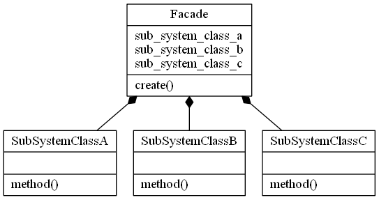

Facade Design Pattern
Video Lecture
Skillshare : https://skl.sh/34SM2Xg
Udemy : Facade Design Pattern
Description
The Facade Pattern is a structural design pattern. It provides a simplified interface to a set of other interfaces, abstractions and implementations within a system that may be full of complexity and/or tightly coupled.

Source Code
facade.py
class SubSystemClassA: @staticmethod def method(): return "A" class SubSystemClassB: @staticmethod def method(): return "B" class SubSystemClassC: @staticmethod def method(): return "C" # facade class Facade: def __init__(self): self.sub_system_class_a = SubSystemClassA() self.sub_system_class_b = SubSystemClassB() self.sub_system_class_c = SubSystemClassC() def create(self): result = self.sub_system_class_a.method() result += self.sub_system_class_b.method() result += self.sub_system_class_c.method() return result # client FACADE = Facade() RESULT = FACADE.create() print("The Result = %s" % RESULT)